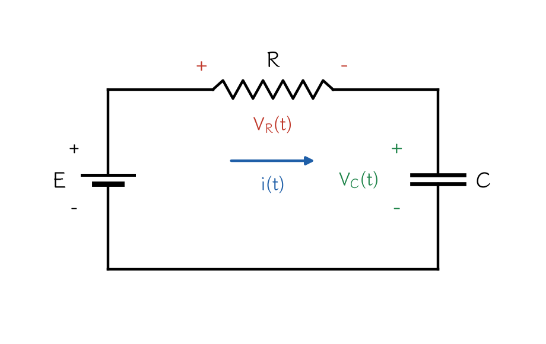
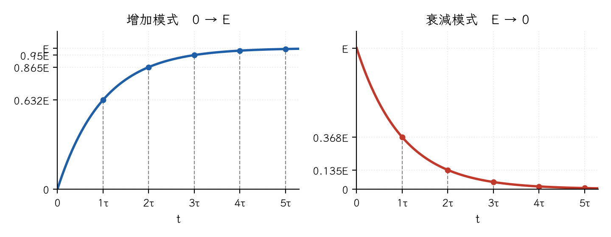
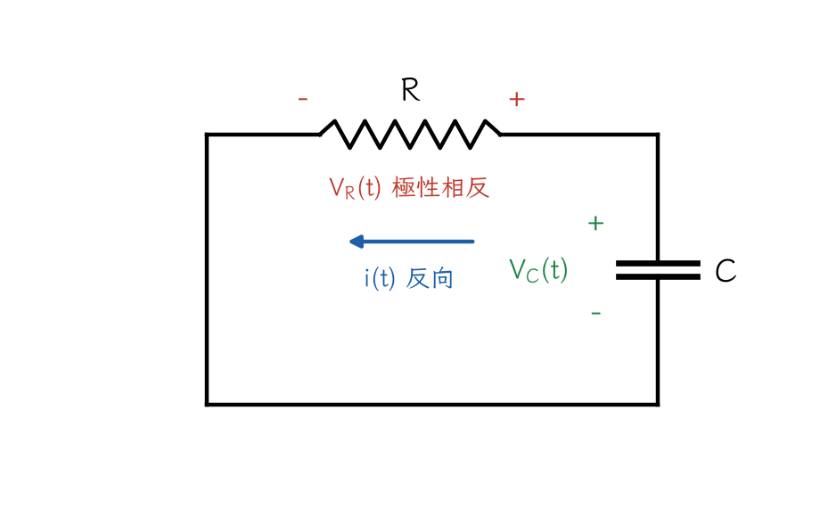
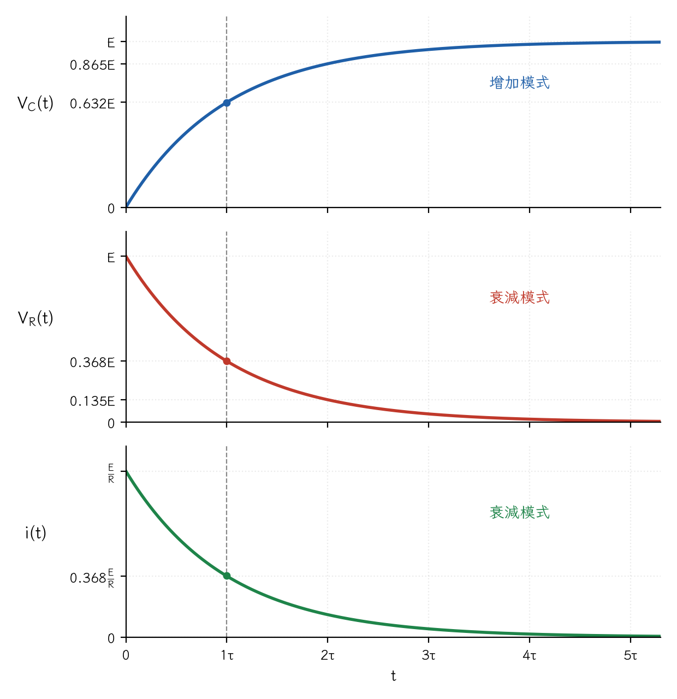
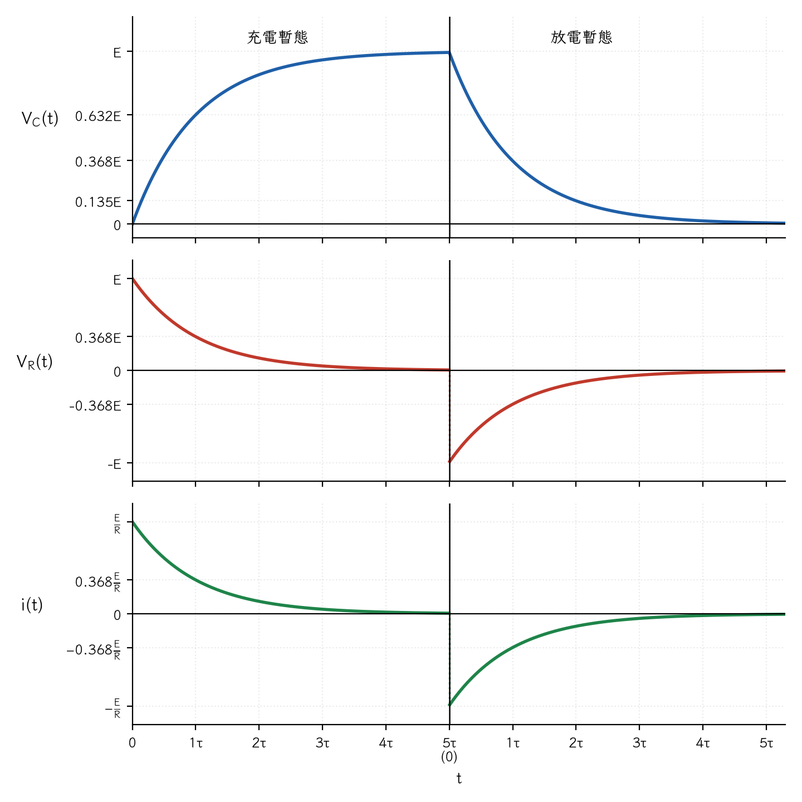

基本電學・筆記留存
R-C 電路的充電與放電
手寫筆記兩頁（2026-09-24 掃描）與整理後的電子檔。整理版的內容照手稿順序重新打字，圖改用程式重畫；「公式整理」一節是整理時補上的。
檔案下載
一、RC 時間常數與基本觀念
- RC 時間常數：τ = RC。充電或放電皆需經過 5τ 才算完成。
- 電容器電壓 VC(t) 充電時：VC(t) 由 0 → E（E 為外加電壓）。
- R-C 充放電電路需要一個電阻 R 與一個電容 C。
- 主要充電對象為電容器 → 充電壓（利用電場儲能）。

由克希荷夫電壓定律（KVL）：
VR(t) + VC(t) = E （E 為固定電壓）
- VR(t) 與 VC(t) 具有「此消彼長」的特性：VR(t) ↓，VC(t) ↑。
- 經過 1τ = RC：若 VC(0) = 0 開始充電，可充到外加電壓的 63.2%，即 0.632E。
- 若 VC(5τ) = E 開始放電，經過 1τ 放掉 63.2%，剩下 E(1 − 0.632) = 0.368E。
二、自然對數 e 的指數特性
充放電過程中的數值都來自 e 的指數函數，以下兩組數值務必熟記：
| 時間 t | 衰減模式 e−t/τ | 增加模式 1 − e−t/τ |
|---|---|---|
| 0 | e0 = 1 | 1 − e0 = 0 |
| 1τ | e−1 = 0.368 | 1 − e−1 = 0.632 |
| 2τ | e−2 = 0.135 | 1 − e−2 = 0.865 |
| 3τ | e−3 = 0.05 | 1 − e−3 = 0.95 |
| 4τ | e−4 = 0.018 | 1 − e−4 = 0.982 |
| 5τ | e−5 ≒ 0 | 1 − e−5 ≒ 1 |
- 衰減模式：時間愈久，數值愈小。
- 增加模式：時間愈久，數值愈大。

三、兩種模式探討（外加電壓 E）
1. 增加模式（0 → E）
| 元件 | t = 0 | t = 5τ（穩態） |
|---|---|---|
| 電容器 C（充電壓） | VC(0) = 0 V | VC(5τ) = E，I = 0（開路） |
| 電感器 L（充電流） | iL(0) = 0 A | iL(5τ) = E / R，I 最大（短路） |
2. 衰減模式（E → 0）
- R-C 充電中，因 E = VR(t) + VC(t)，當 VC(t) ↑ 時 VR(t) ↓。
- 充電過程中的 VR(t) 為衰減模式：E → 0。
- i(t) 也一樣：i(t) = VR(t) / R，i(t) 與 VR(t) 同步變化。
3. R-C 放電
- 放電時由電容器提供能量給電阻，兩者形成並聯關係。
- VC(t) 極性不變：E → 0（經 5τ）。
- VR(t) 極性相反：VR(t) = −E → 0。
- i(t) 電流極性相反：i(t) = −E / R → 0。

四、R-C 充電過程
暫態：0 ～ 5τ；t = 5τ 以後進入穩態。
| 物理量 | t = 0（外加電壓 E） | 變化模式 | t = 5τ（穩態） |
|---|---|---|---|
| VC(t) | 0 V（短路，最小） | 增加模式 | E（斷路） |
| VR(t) | E（最大） | 衰減模式 | 0 V |
| i(t) = VR(t) / R | E / R（最大） | 衰減模式 | 0 A |
- 電容器充飽了，就沒有電流：VC(t) = E、i(t) = 0，穩態時電容器視為斷路。
- 電容器空的時候：VC(t) = 0，視為短路。
- 此時電阻電壓最大、充電電流最大，然後開始衰減至 0。

五、R-C 放電過程
電容器已經充滿至 E，t = 0 時開始放電。放電開始前的狀態：
- VC(t) = E V
- i(t) = 0 A
- VR(t) = 0 V
放電開始後各量的變化：
| 物理量 | 充電時 | 放電時 | 說明 |
|---|---|---|---|
| VC(t) | 0 → E | E → 0 | 極性不變 |
| VR(t) | E → 0 | −E → 0 | 極性相反 |
| i(t) | E/R → 0 | −E/R → 0 | 電流方向相反 |
- 放電過程每經過 1τ，VC 依序降為 0.368E、0.135E、……，約 5τ 後趨近於 0。
- VR(t) 與 i(t) 由負的最大值（−E、−E/R）依序變為 −0.368E、−0.135E……，衰減至 0。

六、公式整理
| 物理量 | 充電（VC(0) = 0） | 放電（VC(0) = E） |
|---|---|---|
| VC(t) | E(1 − e−t/τ) | E · e−t/τ |
| VR(t) | E · e−t/τ | −E · e−t/τ |
| i(t) | (E/R) · e−t/τ | −(E/R) · e−t/τ |
其中 τ = RC；t = 5τ 時視為充放電完成。